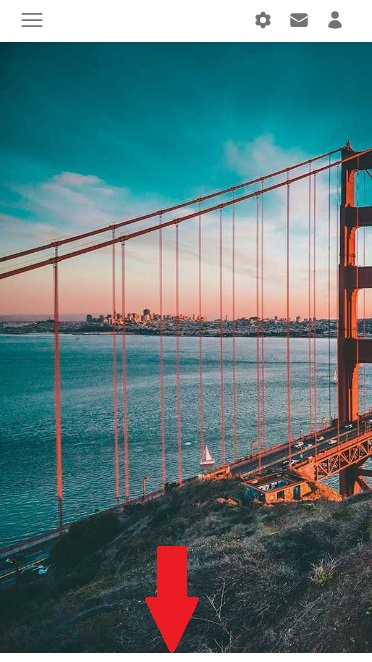

Arbitrary value support in Tailwind CSS allows you to use any custom value with any utility where it makes sense. It's a powerful feature introduced in Tailwind CSS v2.2. This means you're no longer limited by the values defined in your configuration file and can use any value you need right in your HTML.
For example, if you want to set a width that isn't available in Tailwind CSS classes, you can now do so like this:
In the above example, [123px] is an arbitrary value that sets
the width of the element to 123px.
You can also use arbitrary values with responsive design, hover state, etc:
In this example, the width of the element will be
456px on medium screens (md:w-[456px]), and the
width will change to 123px on hover
(hover:w-[123px]).
This feature also supports other units, not just pixels. You can use rem units, percentages, etc. Additionally, you can use this feature with most of the utility classes in Tailwind CSS, such as padding, margin, translate, scale, rotate, skew, grid, etc.
Arbitrary values give you a lot more flexibility and power when using Tailwind CSS. They allow you to have the benefits of utility-first CSS while still being able to use any value you need, right in your markup.
In the previous lesson, we finished our fullscreen Hero Image. On large screens, it fills the available space perfectly, down to the pixel.

However, there is a problem in the mobile view - there is a small, empty space at the bottom.
That's because Navbar is a flexible component and adapts to its content. In the mobile view, the Navbar collapses and hides most of its elements, which reduces its height.
And as you remember, we set our Hero Image margin-top: -56px; ,
because that's the height of the Navbar on large screens.
So we need to make sure that on other screen sizes the height of the Navbar
stays the same, which is 56px.
This is the perfect opportunity to use arbitrary values.
Add min-h-[56px] to Navbar.
The min-h- class defines the minimum height for a given
element, and [56px] is the height given in the form of
arbitrary values that we want to maintain on all screens.
Now it's pixel-perfect on every screen size 🤩